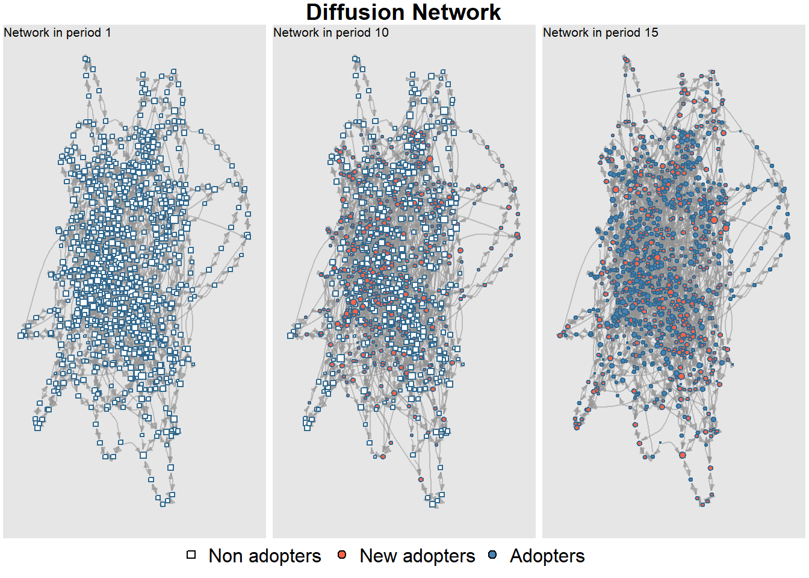
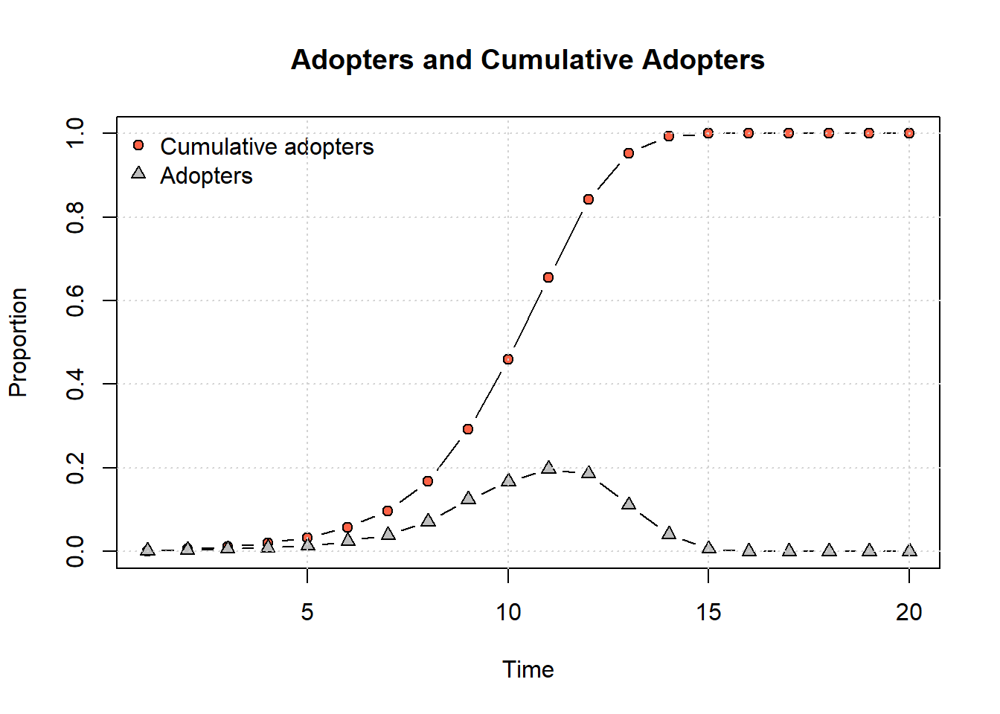
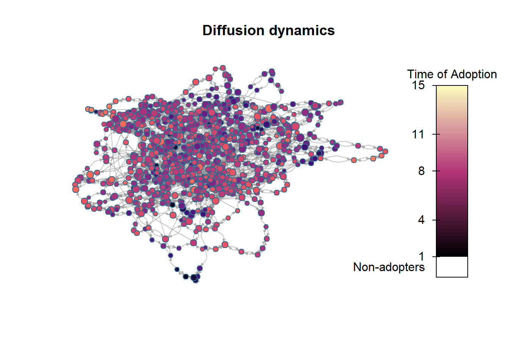
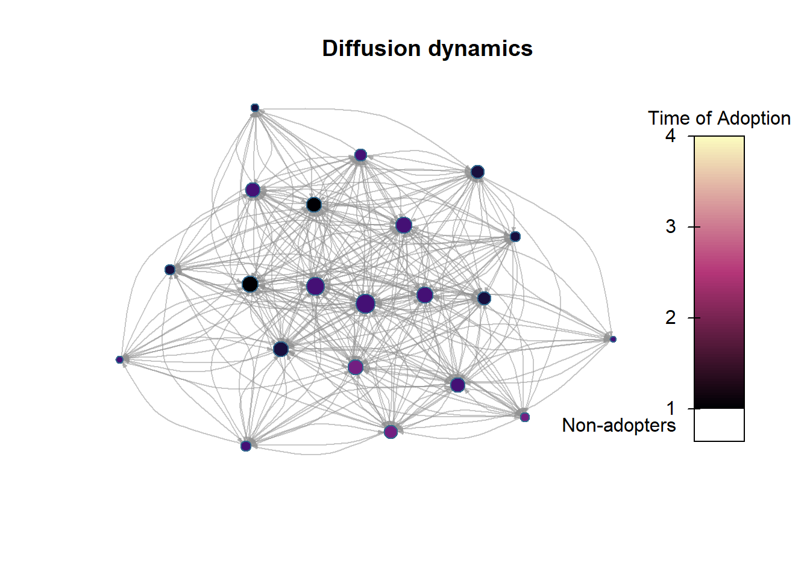

“I’m convinced that ideas and behaviors and new products move through a population very much like a disease does.” Malcolm Gladwell
“Ninety-nine percent of the people in the world are fools and the rest of us are in great danger of contagion.” Thornton Wilder
“Misinformation or distrust of vaccines can be like a contagion that can spread as fast as measles.” Theresa Tam
As we discussed in the lecture, in diffusion of innovation theory the social system is an important element. New ideas often enter communities from external sources, adoption of those ideas then flows through interpersonal contact networks.
In this part of the course we discuss how a network can be used for policy interventions to speed up diffusion processes. To simulate difussion processes we make use of the netdiffuseR package
Intended learning outcomes:
understand the four different approaches to network interventions
be able to simulate a network diffusion process in a random network
be able to simulate a network diffusion process in an actual network
6.1 Network inverventions
The importance of social network influences on behaviors is well established, and the advantages of network approaches to understanding a wide variety of phenomena are clear. There is a accumulated body of evidence that indicates that social networks can be leveraged to accelerate behavior change, improve organizational efficiency, enhance social change, and improve dissemination and diffusion of innovations. In his much article Tom Valente distinguishes four prototypical network interventions.
Individuals. In the most basic network intervention, network data are used to identify individuals to act as ‘champions’.
The most frequent intervention of this type is the use of opinion leaders. Opinion leaders are individuals who exert a significant amount of influence within their network and who can affect the opinions of connected individuals. In social networks opinion leaders are often more central nodes. Note that a direct way to identify opinion leaders is to ask members of a social networks who are most influential.
Leaders may not always be the best change agents. Leaders have a vested interest in the status quo, whereas bridging individuals (who link non- or loosely connected groups) may be more amenable to change and may be in a better position to change others. For example, when diffusion between groups is expected to be difficult, bridging individuals may be more effective change agents. Bridging individuals may be preferred as change agents when the behavior or policy is controversial or not likely to be well accepted initially. Bridging nodes can be identified as brokers who have many connections to people who are not directly connected or as bridges whose connections maximally increase network cohesion.
Low-threshold change agents should be recruited when the researcher wants to create early momentumfor the change and accelerate the time to reach a critical mass or tipping point. Low-threshold adopters are individuals willing to adopt a new idea earlier than their peers. Identifying low-threshold adopters as change agents requires some prior knowledge of behavioral adoption of a related innovation.
Segmentation. In contrast to individual approaches in which certain individuals are recruited to be change proponents, segmentation approaches identify groups of people to change at the same time. For example, companies often introduce new procedures at separate locations sequentially rather than having all locations adopt the new procedures simultaneously. In some cases, behavior change is a group decision owing to the interdependent nature of the innovation or behavior change process. People often view themselves as members of a community of practice with established norms and processes that can only change when the whole group changes. For example, a new workflow practice or technology standard may be difficult to adopt unless the entire group agrees to use the system at the same time. Communication technologies such as fax machines, texting, and social networking increase in value as more users adopt the technology or standard. Groups can either be mutually exclusive or “cliques,” which allow for overlapping group membership. Interventions can be delivered to the groups separately or sequentially. A group structure that occurs in many intraorganizational networks is a core-periphery structure in which core members are densely connected to one another and peripheral members are connected to the core but not to each other. Mobilizing networks that have a core-periphery structure may be accomplished by focusing resources on the core members or by ensuring that the coremembers have sufficient resources or diversity to achieve network goals). For example, community coalitions are often composed of hundreds of organizations and/or individuals, yet the core working group may consist of no more than 20 organizations. Understanding who is part of this core and their distribution of assets is critical to coalition success.
Induction. Induction interventions stimulate or force peer-to-peer interaction to create cascades in information/behavioral diffusion. Word-of-mouth (WOM) interventions stimulate interpersonal communication to persuade others to adopt the new behavior. Media marketing campaigns are often designed to generate buzz about their products, with the goal of increased sales, and frequently encourage users to recommend products to their friends and family. Often referred to as “going viral,” these interventions do not necessarily use network data, but they depend on the network for their effects. Research has shown that the success of WOM is a function of the network position of initial adopters and the incentives they have to recruit others. In respondent-driven sampling [(RDS), also known as “snowball methods”], individuals recruit others to participate in a study (for instance,a clinical trial) or receive an intervention. In RDS, an initial set of people who are members of the community or population to be influenced are selected and identified as “seeds.” These seeds then recruit members of their social networks who subsequently encourage additional people to participate, and so on. Researchers can use coupons or cards as a means to track who recruited whom. Additionally, researchers must decide on the number of seeds to start with and how many others each seed can be expected to recruit. RDS is quite effective at connecting with hard-to-reach individuals who might not otherwise receive services. This is achieved by initiating recruitment with people who are members of this marginalized group. One of the initial studies applying RDS to the recruitment of injection drug users (IDUs) showed that an unbiased sample of IDUs could be recruited within three to five waves of recruitment. This tactic enables researchers to generalize their study results to a broader group of IDUs and ensures that interventions for IDUs reach everyone they are intended to reach. Adhering consistently to study procedures and protocols over these three to five waves of data collection can be challenging, however. One participant generated more than 100 recruits of varying ethnicity, gender, and place of residence. RDS differs from WOM in that RDS interventions require the seeds to recruit their closely-associated peers, whereas WOM-interventions work by sparking interpersonal communication among any and all social ties. Network outreach is similar to RDS, except that the network seeds recruit members of their personal networks to participate in an intervention together, in which the behavior change messages can be delivered to the entire group. Network outreach is expected to be more effective than individual interventions because the motivations and lessons (such as preparation of healthy food) are delivered in a group context, and the group reinforces the positive behavior change.
Alteration. Strategies one through three generally assume a static network (or ignore network dynamics). Many interventions deliberately alter the network to improve efficiency. Three different tactics might be considered: (i) adding/deleting nodes, (ii) adding/ deleting links, or (iii) rewiring existing links.
Adding nodes is an important and long-standing behavior change approach with outside change agents, expert consultants, and lay health advisors (LHAs) being deployed in many settings to accelerate behavior change. Many studies have used LHAs, who are community members trained in behavior change techniques. These LHAs fan out into the community, often going from door to door, to inform individuals and groups about health and other topics to promote behavior change. LHAs may sometimes work within their existing social networks or approach strangers at their homes, places of business, or in public areas. Politicians and advocacy groups often mount “get out the vote” campaigns consisting of door-to-door appeals, which have been shown to increase voter participation and diffuse to other household members. Support groups, such as Alcoholics Anonymous, are often used to add new people to a person’s network to facilitate behavior change. Node-addition interventions often create connections randomly, yet it is probably preferable to add nodes to the network selectively on the basis of network position. New individuals should be added to a network to bridge disconnected or loosely connected groups.
Node-deletion interventions remove nodes that occupy critical positions in a network. Nodes are then ranked on the degree to which their removal changes the network statistic. Node-deletion interventions have been embraced by antiterrorist agencies to degrade terrorist network organization. Removing critical nodes from sexual contact networks is an effective way for public health agencies to reduce disease spread and protect communities. In such cases, it is not always physical node removal but rather the use of protective behaviors (such as condom use) that inhibits transmission by the node. Node-deletion interventions change the focus of study from individual behavior to system dynamics in attempts to understand how communities or organizations respond to the removal or alteration of critical nodes.
Networks can be rewired to increase efficiency or improve performance based on certain goals. For example, teachers often randomize classroom networks so that ability levels are randomly distributed in the network. As with node and link changes, the researcher can also maximize the network on one or several metrics. Watts has suggested that optimal networks are those with short average distances between nodes and a high degree of clustering. These small-world networks maximize bridging and bonding opportunities in the network. Rewiring may be conducted to connect individuals with different attributes (e.g., a buddy system).
Selecting an appropriate network intervention depends on many factors, including the type and character of available network data, the type of behavior change being promoted, and the environmental or situational context. Network data can be derived from many sources, including archived communications (such as phone, e-mail, text messaging, participant observations, published sources (such as corporate board membership), and survey data.
Advice networks identify people who are expert and credible sources of information and who usually have considerable technical knowledge about the idea or product. Discussion (and friendship) networks, in contrast, identify relations that are high in trust, mutual understanding, and interpersonal affect in which communication and persuasion flow easily. Discussion relations are mutual and close physically; advice relations are more likely to be asymmetric and distant.
When barriers to adoption are technical or the innovation is complex, advice networks should be used for the intervention. In contrast,when barriers to adoption are primarily cultural, discussion networks may be more appropriate. Network interventions should measure different types of networks using the data for different strategies and tactics.
Geographic distance also plays a role: Smaller, local organizations will generally rely on trusted peers for information and not depend on geographically distant leaders, because local leaders provide advice that is more sensitive to local conditions and culture. Geographically distant leaders are still quite important, however, and they might have more technical knowledge than local leaders, which would make them valued sources of information.
In addition to network type, overall network properties influence strategy selection. When network data indicate that the network is nonexistent, too fragmented, too centralized, or otherwise dysfunctional, there is a need for network change. The interventionist should use induction or alteration techniques to create a network amenable to change. Once the network is built or restructured, identification and segmentation tactics can be used to accelerate change. Network structure also matters. For example, a highly centralized network may profit from leader identification tactics, whereas a decentralized
network will not gain much from using leaders, and instead the analyst must rely on segmentation or induction strategies.
Characteristics of the behavior being studied also affect intervention choice. A program designed to spread information of a readily accepted idea can rely on easily identified opinion leaders, whereas one that requires complex organizational and personal changes may need dynamic rewiring and/or matching of change agents. Interdependent behaviors are those that increase in value as more people adopt them. For example, Facebook becomes more appealing as more of one’s friends use this social networking site. Interdependent behaviors often have slow initial uptake because there are few advantages to being an early adopter. Thus, interdependent innovations benefit from segmentation strategies, induction matching, or rewiring so that the interdependence can be explicitly addressed.
Prevalence also affects intervention choice. At high levels of prevalence (greater than 75%), network interventions can be used to find individuals who have not yet adopted the behavior in question, perhaps due to their network position. At low prevalence (less than 15%), network interventions can identify whether early users are leaders and, thus, are well positioned to accelerate behavior spread or whether they are on the periphery and hence likely to be slowly imitated.
6.2 Simulating network diffusion in R
For the analyses and simulation of diffusion processes, we rely on a package called netdiffuseR which includes built-in functions for simulating diffusion processes. Importantly, this package allows for consideration of both empirical and simulated networks as the starting point. The simulation is done in the following steps:
Using seed.graph, a baseline graph is created.
Given the baseline graph, the set of initial adopters is defined using seed.nodes.
Afterwards, if rewire=TRUE t-1 slices of the network are created by iteratively rewiring the baseline graph.
The threshold.dist function is applied to each node in the graph.
Simulation starts at t = 2 assigning adopters in each time period accordingly to each vertex’s threshold and exposure.
These are the main arguments of the function.
n - The number of nodes to include in the network. This is only needed if a random graph is needed. If you supply a seed.graph (a real network) this argument is not needed.
t - the number of time steps to consider.
seed.graph - The argument seed.graph can be either a graph itself or a character scalar in which the user sets the algorithm used to generate the first network (network in t=1), this can be either “scale-free” (Barabasi-Albert model using the rgraph_ba function, the default), “bernoulli” (Erdos-Renyi model using the rgraph_er function), or “small-world” (Watts-Strogatz model using the rgraph_ws function). When you set an algorithm you need to provide arguments for the algorithm. The list rgraph.args' passes those arguments to the chosen algorithm (seergraph.ba,rgraph.ws, orrgraph.erin the manual). Thergraph.args’ is not needed when you work with an actual graph.
seed.nodes - This argument can be set to either marginal, central, or random and this refers to the positions of the initial nodes to be “infected” or “adopters” in the network model. These options will select nodes with either the lowest degree, highest degree, or randomly respectively. Alternatively, you can supply a vector of node numbers representing the nodes which should be adopters in time step 1.
seed.p.adopt - This is the proportion of nodes that will be initial adopters/infected.
rewire - This logical argument expects a TRUE or FALSE. If TRUE at each time step a number of edges will be reassigned at random based on additional options passed to the rewire.args argument. Note that this argument is TRUE by default.
threshold.dist - This argument expects either a function or a vector of length n that defines the adoption threshold (susceptibility) of each node.
As we will see below, we do not need to use all of these arguments in every network simulation. Reading the documentation of the rdiffnet package provides additional details on options described briefly here.
One important concept that needs to be formally defined before we move on is the network threshold (defined in relationship to \(\tau\) or threshold.dist). This is equal to the proportion of neighbors who need to be adopters for the target to adopt. So if \(\tau\) equals .25, at least three out of four neighbors need to adopt before target adopts.
6.2.1 random graph
In most applications this is randomly varied (like in the examples below), however it is possible to specify various thresholds for different actors.
library(netdiffuseR)
Attaching package: 'netdiffuseR'
The following object is masked from 'package:dplyr':
recode
The following object is masked from 'package:base':
%*%
Warning in (function (graph, p, algorithm = "endpoints", both.ends = FALSE, :
The option -copy.first- is set to TRUE. In this case, the first graph will be
treated as a baseline, and thus, networks after T=1 will be replaced with T-1.
In this example, we have created a random network with 1000 nodes and small world structure. We examine the network across 20 time steps. We send a value of 0.1 to the rgraph.args argument meaning that proportion of ties will be rewired in the random graph to generate “small-world” structure (see rgaph_ws for more info) in the initial network configuration. We set the initial adopters in the network to 0.001 or a single node in this 1000 node network. Finally, we set the threshold.dist to be a random uniform number (using the runif function) between 0.1 and 0.5 meaning that a node will adopt the contagion at a given time step if between 10% and 50% of it’s neighbors have adopted. Note that we have not set a value for rewire so by default this is TRUE and a small proportion of edges will be rewired at each time step.
The summary output provides information on the number of adopters and the cumulative adoption percent at each time step. We also have information on the hazard rate, which is the probability that a given node will be infected/adopt at each step.
The Moran’s I is a measure of autocorrelation which here is sued to indicate whether infected nodes/adopters are concentrated among neighbors in the network (nodes that share an edge). Not surprisingly, we see they are across all but the first time step. Moran's I is not exam material, no need to memorize this.
The netdiffuseR package also has built in functions for plotting. First, let’s plot our simulated network at a few different time steps to see the distributions of adopters and non-adopters. Here we plot the 1st, 10th, and 15th time steps:
plot_diffnet(net_test1, slices =c(1, 10, 15))

plot_adopters(net_test1)

We can also plot a network that shows the time step at which each node adopted the contagion:
plot_diffnet2(net_test1)

6.3 Simulating diffussion in an actual network
The above example is a pure simulation, with a random graph as the starting point. rdiffnet allows us to use a real world network to simulate a diffusion process. For our purposes this is more interesting. Reading the data has been discussed before and is straightforward. We use the (symmetrized) data that we used to discuss visualization earlier in the course (organizational network of 21 managers). We focus on information exchange relationships (one or both of the actors in a relation provides the other with advice).
We can now use the adjacency matrix as the seed graph (after symmetrizing). Again the thresholds are random. To help interpret the visualization of the diffusion process, we use the names of the managers as provided in the nodes file.
The selection of early adopters (nodes that are first to adopt the innovation) is random in this simulation. So is the selection of thresholds. A threshold of 1 in the model implies that an actor only then adopts if 100% of the neighbors adopt as well. In the continuation we select two actors who start the diffusion process. We also assume that older employees are less innovative, so the treshold is not random anymore.
# we must ensure that the thresholds (based on age) are between 0 (% neighbors #needed to adopt) and 1 (all neighbors must adopt before actor adopts)age=nodes$AGEage<-age/max(age)age<-age-min(age)age
And we can plot a network that shows the time step at which each node adopted the contagion, although since the process was quick the plot is not that clear:
plot_diffnet2(net_test2)

6.4 Exercise
Using the rdiffnet function compare a diffusion process in two random networks (n=100, t=20). Explore whether it matters when you select marginal or central early adopters.
Use the friendship network of the Krackhardt data “Krack-High-Tec-Friendship-edges.csv”. Select two central nodes as early adopters, then select two marginal nodes, compare the results of the network diffusion simulation.
Using the same model as in question 2, repeat the analysis but assume that threshold depends on tenure.